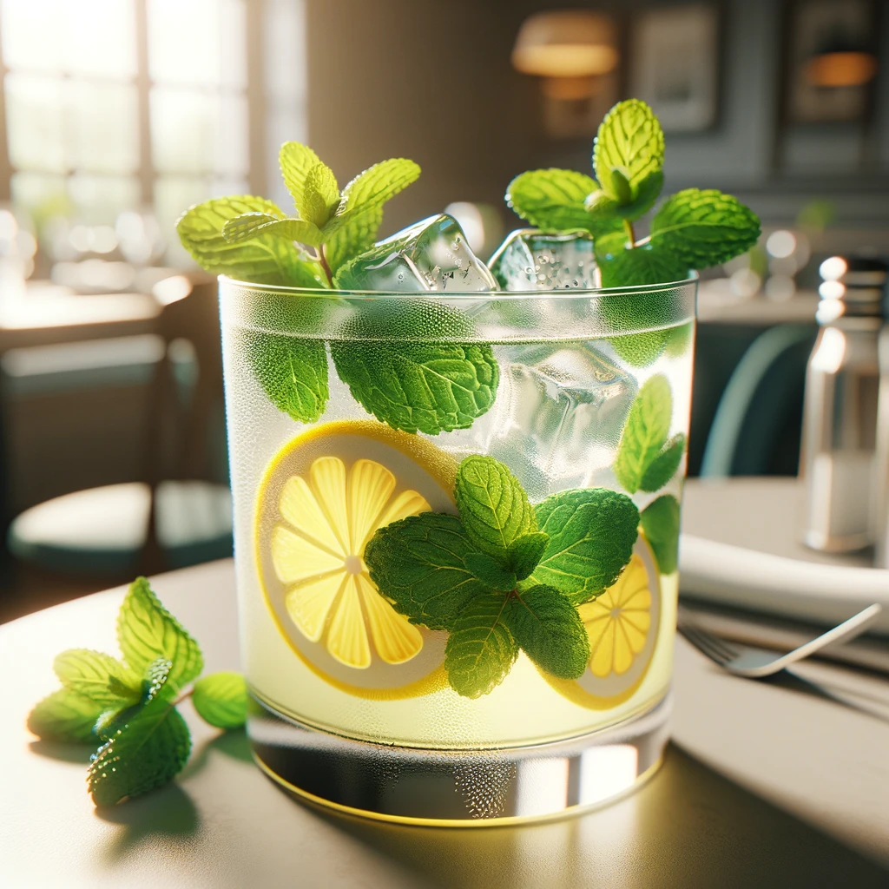

"kiri's kitchen is a cozy family owned restaurant in the heart of san Francisco build since 2015 its traditional and modren american cuisines,provding a warm comforting setting and and fresh warm aura kiri believes in creating a place where every dinner feels at home while enjoying heartly.delicious meals".
while her meal has many iteams to pick from ,she would like to only highlight a few custmoer for including the appetizers,vegetable spring rolls and clam chower soup

Are criispy that are filled with veggies and served with sweet chill drip made fresly and that only cost(6.95?).
the Clam Chowder Soup is a creamy New England-style chowder that is rich with clams and potatoes($7.95).

Grilled Salmon and her Classic Cheeseburger. The Grilled Salmon is a fan favorite with the freshly grilled salmon being served with a lemon-butter sauce, seasonal vegetables, and mashed potatoes ($18.95). It is hard to pass up the Classic Cheeseburger though with its juicy beef patty served with cheddar cheese, lettuce, tomatoes, and house sauce. Don’t forget the side of fries! ($14.95).
Kiri’s Kitchen serves many desserts but the two most popular are the Apple Pie and Chocolate Lava Cake. The Apple Pie is a traditional apple pie topped with a scoop of vanilla ice cream and drizzled with caramel sauce ($6.95). The Chocolate Lava Cake is to die for as it is served warm with a molten center and a dollop of whipped cream on top ($7.95).

Kiri would like to highlight her House Blend Coffee and Mint Lemonade. The House Blend Coffee is a rich and smooth coffee blend that is freshly brewed when ordered ($3.50). The Mint Lemonade is a refreshing take on lemonade with a hint of mint ($4.50).
Every Monday is Pasta Night at Kiri’s Kitchen where you can enjoy any pasta dish at a $2 discount. Available in the Winter is her Winter Squash Soup, a creamy squash soup topped with roasted pumpkin seeds ($7.95).

Available in the Summer in her Summer Berry Salad which includes mixed greens with fresh berries, goat cheese, and a raspberry vinaigrette ($10.95).
Sara L left a 5-star review and said "The atmosphere is so warm and inviting, and the food is absolutely delicious! The grilled salmon is a must-try!" Mike D left a 4-star review and remarked, "I love the variety in the menu. The seasonal specials keep me coming back. Kiri's Kitchen has become our weekly dining spot." Emma R. left a 5-star review and attested, "The apple pie is the best I've ever had. It's the perfect blend of sweet and tart, and the crust is just right. A cozy place with friendly staff!"

Phone number: (415) 555 - 1234
Address: 123 Cozy Lane, San Francisco, CA 94102
Open Mon-Sun 11:00 AM - 10:00 PM